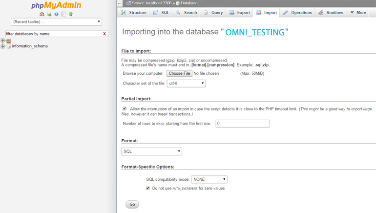
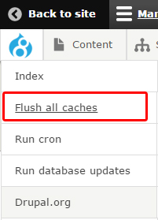

4. Omni 8.x Sample Content Setup
Introduction
Sample content help user understand how everything setup as in demo. It should install in a testing or development environment.
Omni 8.x Sample Content Setup process is a bit different than Omni 7.x. Omni 7.x using Backup and Migrate module to install a replica of Omni demo content. Since Backup and Migrate module doesn't have 8.x release yet, we will use basic sql import for Omni 8.x Sample Content Setup. When Backup and Migrate module ready, we will update accordingly. Even without third party module's help, the setup process still quite simple.
Simplify Steps:
- Install Drupal
- Install Required Modules
- Install Omni Theme
- Import Database
- Restore Images Directory
- Re-log in
- Run Update
- Flash Caches
- Change User Name & Password
- Install Drupal
- Install Required Modules
- Install Omni Theme
- Import Database
- Restore Images Directory
- Re-log in
- Run Update
- Flash Caches
- Change User Name & Password
In Detalis
- Install Drupal 8
Download latest Drupal 8 and install it as usual. For how to install Drupal, you can check Drupal 8 Quick Start user guide for detail.
- Install Required Modules
Upload & upzip all required modules into drupal 8 root's modules folder. Not need to enable it.
- Install Omni Theme
Upload omni_portfolio theme files into drupal 8 root's themes/custom folder. If custom folder doesn't exist, create one. Not need to enable it.
- Import Database
Since we can't use Backup and Migrate module yet, we are going to import sql file into Drupal site directly. Many hosting service offer database admin interface. We are going to use popular phpMyAdmin as example.
Open phpMyAdmin panel and find the database you create for Drupal 8 site. Click on Import tab & make sure you select the correct database. Double check with database name!
Click on Choose file button and upload omni-portfolio/drupal 8/document/sample content/omni-portfolio-replica.sql.zip.
Click on Go button, the process might take a few minutes. At the end it will show import complete message.

- Restore Image Directory
Unzip omni-portfolio/drupal 8/document/sample content/omni-portfolio-image.zip file. It contain 2 folders(2016-08 & default_images). Upload these two folders into Drupal 8 root's directory sites/default/files/.
- Re-log in
After above Restore Database step, you will be forced logout since your original user doesn't exist anymore. Your new user name as: Admin and password as Admin with admin right. You need to re-login (go to www.MYSITEADDRESS.com/user) as user Admin.
- Run Update
After re-log in, you need to run site update. Go to www.MYSITEADDRESS.com/update.php to update your site.
- Flash Caches
Now flush site caches, you can go to Configuration > Development > Performance or use Admin tool bar.

- Change User Name & Password
You need to change Admin password and email to something else immediately.